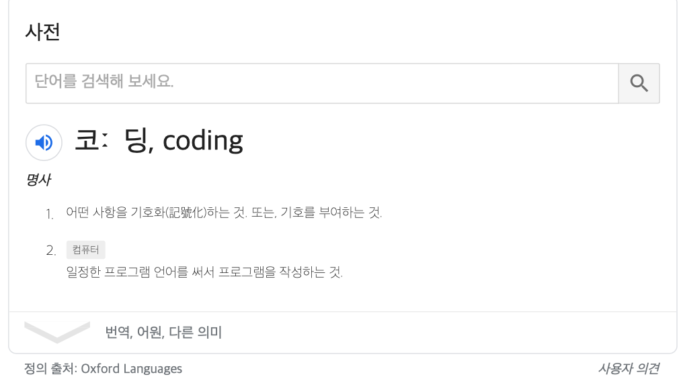

코딩의 정의 |
 |
코딩의 방법 |
컴퓨터를 이용해 미리 구조화된 명령어들의 집합(흔히 '언어'라고들 함)을 작성하는 방법이 있음. 컴퓨터에 전용 편집기와 컴파일러라는 별도의 프로그램을 설치하여 코드를 작성하는 방법이 있고 일반적인 텍스트 편집 프로그램을 이용해 코드를 작성하는 방법이 있다 |
코딩 언어의 종류 |
수많은 언어들이 있다. C, CPP, HTML, CSS, JAVA... 언어에 따라 다른 언어와 접점을 갖는 언어도 있고 접점을 갖지 않고 독립적인 언어도 있음 |